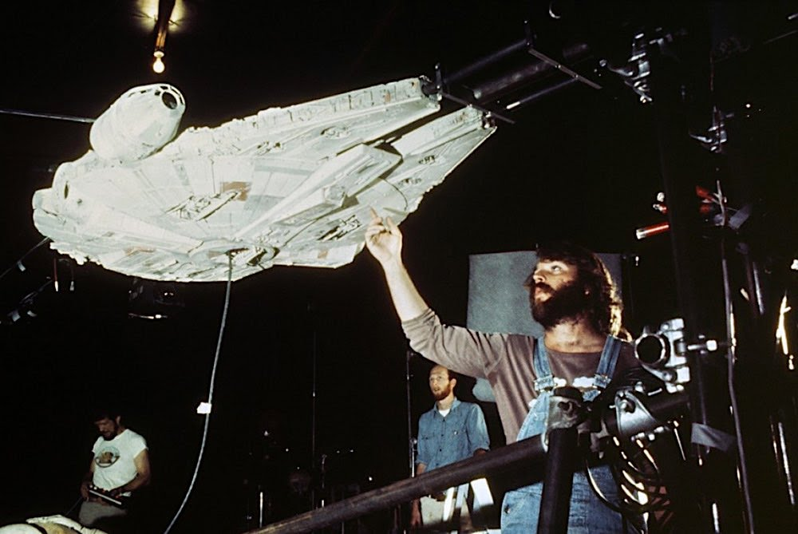
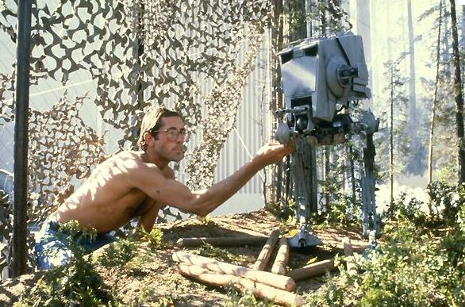

Until Star Wars (1977), shots of ships in space were filmed with large- and small-scale
models, allowing
for slow and rigid movements. All that changed when Star Wars visual-effects supervisor John Dykstra
devised a new computer-controlled motion camera system -- dubbed the the "Dykstraflex" --
for Star
Wars.
Now a spaceship model could be filmed against blue screen in a single position while the camera
moved
around it, the idea being to provide the illusion of movement.

